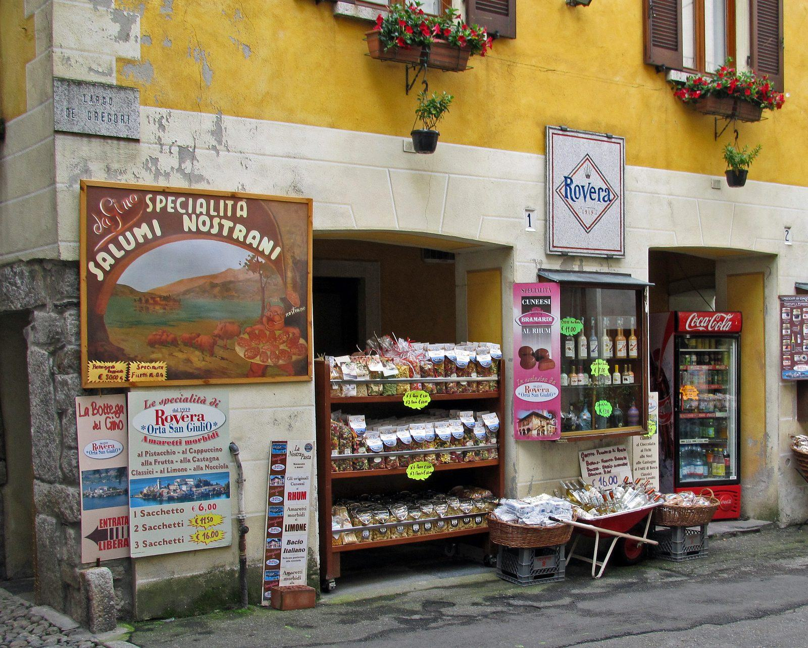
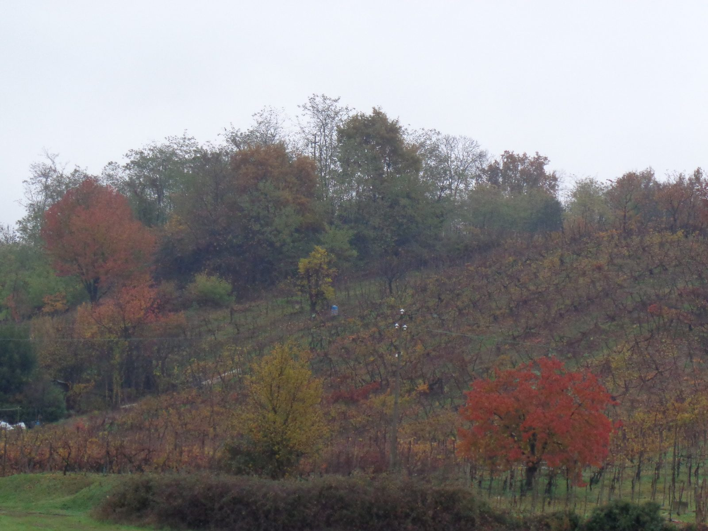
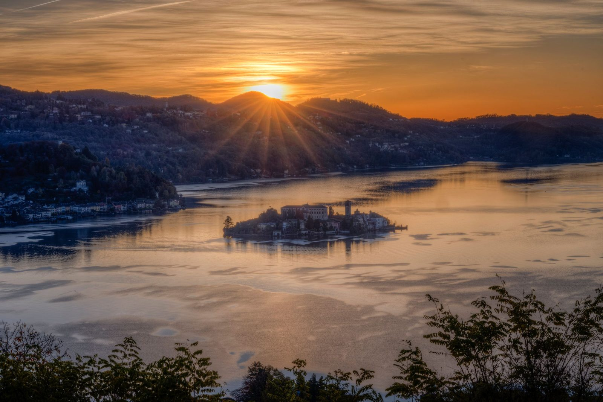
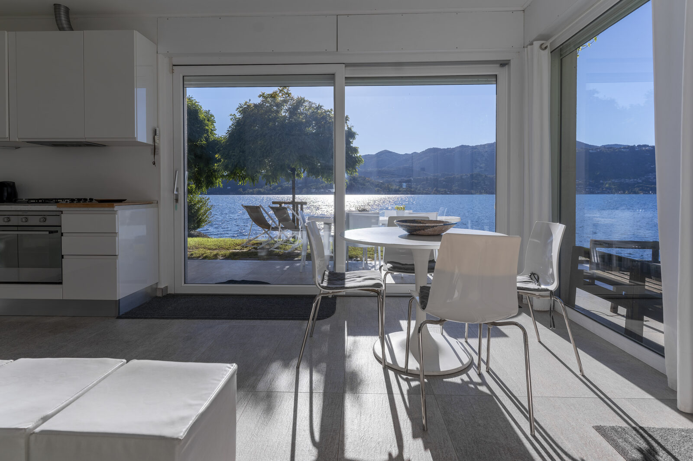

Per essere un lago di diciotto chilometri quadrati, sul Lago d'Orta si mangia sorprendentemente bene. A pochi chilometri dal paese ci sono tre ristoranti stellati Michelin, tra cui uno dei tre stelle d'Italia, e intorno a loro una rete di trattorie, enoteche e terrazze sul lago che la maggior parte dei visitatori non scopre mai, perché non va oltre Piazza Motta. Questa guida su dove mangiare sul Lago d'Orta racconta gli uni e gli altri: cosa ordinare, dove sedersi e i dettagli pratici che fanno la differenza tra una buona cena e una cena mancata. Tutti i locali qui sotto sono stati verificati a ottobre 2026.
Cosa mangiare: i piatti del Cusio
Il Lago d'Orta sta dove la pianura risicola novarese incontra le valli alpine, e la sua cucina è esattamente questo incrocio: risotto e salumi, polenta e formaggi di montagna. Ecco cosa vale la pena ordinare quando lo trovi in carta.
- Paniscia novarese. Il grande piatto della provincia: un risotto con fagioli, verza, vino rosso e salam d'la duja. Il nome viene dal panìco, il miglio che qui si cucinava prima che arrivasse il riso. Sostanziosa, perfetta da ottobre in poi.
- Salam d'la duja. Un salame morbido conservato sotto strutto in un vaso di terracotta, la duja, così da restare tenero per mesi. Lo trovi nei taglieri e dentro la paniscia.
- Mortadella d'Orta. Niente a che vedere con quella di Bologna: è un insaccato cotto a base di fegato di maiale, mentre la sua versione cruda si chiama fidighin. Entrambi sono nell'elenco ufficiale dei prodotti agroalimentari tradizionali italiani. Assaggiala su un tagliere di salumi locali con un bicchiere di rosso.
- Tapulone. Viene da Borgomanero, appena a sud del lago: carne d'asino tritata e cotta a lungo nel vino rosso, servita con la polenta. La leggenda locale vuole che l'abbiano inventato i pellegrini di ritorno dall'Isola San Giulio, rimasti senza nient'altro da mangiare che il loro asino.
- Gorgonzola e Toma. Il Consorzio del Gorgonzola ha sede a Novara e il Piemonte produce circa sette forme su dieci, quindi questo è il posto giusto per assaggiarlo come si deve, dal dolce e cremoso al piccante e friabile. La Toma Piemontese, un formaggio di montagna dal gusto delicato, viene dalle valli intorno al lago.
- Risotto. Novara, Vercelli e Pavia coltivano quasi l'80% del riso italiano, e qui ogni cucina prende il risotto sul serio: dalla paniscia alle versioni con Gorgonzola, castagne o funghi di bosco in autunno.

Due parole sul pesce di lago. Nei menu intorno al lago trovi persico, coregone e trota, e possono essere ottimi. Però sul Lago d'Orta non esiste la pesca professionale: la popolazione ittica si è ricostituita solo di recente, dopo decenni di inquinamento industriale, una storia che raccontiamo nell'articolo sul miracolo del liming. Il pesce che hai nel piatto, quindi, non è stato pescato davanti a te. Se ti interessa, chiedi da dove arriva.
Cosa bere: il Nebbiolo di cui nessuno parla

Le colline a sud del lago fanno parte dell'Alto Piemonte vinicolo, e producono rossi da Nebbiolo molto meno famosi del Barolo e molto più convenienti. Il Ghemme è il vino di punta: DOCG dal 1997, prodotto con almeno l'85% di Nebbiolo — che qui chiamano Spanna — ammorbidito con Vespolina e Uva Rara. Boca, Fara e Sizzano sono DOC più piccole con un seguito di appassionati quasi di culto, e la denominazione più ampia Colline Novaresi comprende un bianco fresco da uve Erbaluce. Ordina un Ghemme con il tapulone o la paniscia, e capirai perché chi lo produce non ha nessuna fretta di farlo sapere in giro.
I ristoranti stellati
- Villa Crespi, Orta San Giulio — tre stelle Michelin. Il ristorante di Antonino Cannavacciuolo in una villa moresca dell'Ottocento, la grande occasione del lago. Pranzo e cena dal mercoledì alla domenica, chiuso lunedì e martedì, e chiuso per la pausa invernale dal 4 al 28 gennaio 2027. È a 11 minuti a piedi da Villa Volpe; abbiamo raccontato l'esperienza per intero.
- Andrea Monesi – Locanda di Orta, in Via Olina, in paese — una stella Michelin. Una cucina piccola e creativa nel cuore del centro storico, con tre minuscole terrazze da prenotare con largo anticipo. Chiuso il martedì; solo cena dal mercoledì al venerdì; pranzo e cena sabato, domenica e lunedì.
- Cannavacciuolo by the Lake, al Laqua by the Lake di Pettenasco — una stella Michelin. Il secondo indirizzo di Cannavacciuolo sul lago, con una terrazza direttamente sull'acqua e lo chef Gianni Bertone in cucina. È stagionale, dalla primavera all'autunno, e ha accanto un bistrot più informale.
- Al Sorriso, Soriso — una stella Michelin. Un nome storico dell'alta cucina piemontese, in un paese in collina a una decina di chilometri a sud del lago.
La Guida Michelin segnala anche due ristoranti sul lago senza stelle: il Giardinetto a Pettenasco, con vista sull'isola e un rooftop bar, e Casa Fantini – Lake Time a Pella, sulla sponda occidentale. La guida 2027 è attesa per novembre 2026, quindi le stelle potrebbero cambiare; quelle indicate qui sono dell'edizione 2026.
In paese: Piazza Motta e i vicoli alle sue spalle
I tavoli di Piazza Motta, davanti all'isola, sono i più famosi di Orta. Si paga la vista, e al tramonto ne vale la pena. Ai Due Santi, Venus e il Leon d'Oro hanno tavoli vista lago, e La Piazzetta, sulla stessa piazza, è tra i più apprezzati nelle recensioni; d'estate, per la sera, prenota. Un vicolo più indietro i prezzi scendono: Filo e Fieno, in Via Olina, è tra i ristoranti meglio recensiti del paese.
Per qualcosa di più leggero, Pan & Vino in Piazza Motta è un'enoteca con gastronomia, salumi e formaggi piemontesi e vini del territorio (chiuso il mercoledì, e per la pausa invernale da inizio gennaio a fine febbraio), mentre Al Boeuc, in Via Bersani, è un'enoteca storica. Per caffè e pasticcini, Il Banco di Cannavacciuolo è la pasticceria dello chef sulla piazza. E per cenare in centro storico con il lago sotto di te, il Teatro Magico, ristorante dell'Hotel San Rocco, ha finestre ad arco sull'acqua e, in primavera e in estate, terrazze in riva al lago.
Sull'isola

Sull'Isola San Giulio c'è un solo ristorante, il Ristorante San Giulio, con una terrazza sull'acqua. È stagionale: nel 2026 ha aperto il 21 marzo, con pranzo tutti i giorni tranne il mercoledì e cena solo il venerdì e il sabato, da giugno a settembre. Pranzare sull'isola dopo una mattinata lungo la Via del Silenzio è una delle cose più belle da fare sul lago.
A piedi da Villa Volpe
Se stai da noi, per mangiare bene non ti serve la macchina.
- L'Ustaria Cà dal Rat — 9 minuti a piedi lungo la riva. Cucina creativa dello chef Carlo Marforio su una terrazza a filo d'acqua, con un pontile tutto suo. È il nostro vicino più prossimo, e un ottimo vicino.
- Villa Crespi — 11 minuti a piedi, per la grande serata.
- Ristorante Bocciolo — una ventina di minuti a piedi verso Pettenasco, all'Hotel Bocciolo: ristorante e pizzeria informale, con terrazza.
- La Cucina della Darbia — 25 minuti a piedi in salita, o pochi minuti d'auto, fino a un piccolo resort di lusso sopra il paese con vista sul lago e sul Monte Rosa. Lo chef Matteo Monfrinotti è in cucina a cena nei giorni feriali, a pranzo e a cena nel fine settimana; chiuso il mercoledì.
- Piazza Motta — circa mezz'ora a piedi lungo la strada del lago fino in paese, oppure pochi minuti d'auto fino ai parcheggi sopra il centro.
In collina e sull'altra sponda
I paesi sopra la sponda orientale custodiscono le cucine più tradizionali. La Taverna Antico Agnello a Miasino, nell'antica Villa Nigra, è il posto per i classici, dalla mortadella di fegato al salam d'la duja. La Fattoria del Pino, sulle colline di Miasino, è una trattoria in cascina con camere.
Sull'altra sponda, Pella, a ovest, guarda dritto verso Orta e l'isola. Il Ristorante Imbarcadero ha una terrazza accanto al pontile, l'Antica Cartiera è una trattoria moderna in paese e la Gelateria Antica Torre sul lungolago è la scusa migliore per una passeggiata serale. Da marzo a ottobre il battello di linea collega Orta e Pella, così puoi attraversare senza fare il giro del lago in macchina.
Consigli pratici
- Orari. Si pranza più o meno dalle 12.30 alle 14, si cena dalle 19.30. Le cucine chiudono prima che al Sud: non contare di presentarti alle 22.
- Prenota. Sempre per gli stellati, per l'isola d'estate e per un tavolo in Piazza Motta al tramonto. Molti ristoranti hanno un giorno di chiusura settimanale, spesso il martedì o il mercoledì.
- Il coperto. Va in genere da 1 a 5 euro a persona, ed è regolare purché sia indicato nel menu.
- Inverno. Diversi locali chiudono per qualche settimana tra novembre e febbraio, e quelli stagionali (l'isola, Laqua) aprono solo dalla primavera. Telefona prima. La nostra guida al Lago d'Orta in autunno e inverno ne parla più a fondo.
- Parcheggio. Il centro di Orta San Giulio è chiuso al traffico. Parcheggia sopra il paese, al Prarondo o in Via Panoramica, e scendi a piedi: ci vogliono dieci-quindici minuti. Altre indicazioni nella nostra guida su come arrivare al Lago d'Orta.
Oppure cucina tu, vista lago

Alcuni dei pasti migliori sul Lago d'Orta non si fanno al ristorante. Villa Volpe ha una cucina completamente attrezzata e un tavolo da pranzo rivolto verso l'acqua: un tagliere di mortadella d'Orta e Gorgonzola presi in gastronomia, una pentola di risotto e una bottiglia di Ghemme, mentre la luce cala sul lago, possono facilmente diventare la cena della settimana. E la sera dopo vai a piedi al ristorante qui accanto.
Domande frequenti
Quanti ristoranti stellati ci sono sul Lago d'Orta?
Tre sul lago nella Guida Michelin 2026: Villa Crespi (tre stelle) e Locanda di Orta (una stella) a Orta San Giulio, e Cannavacciuolo by the Lake (una stella) a Pettenasco. Anche Al Sorriso, a Soriso, a una decina di chilometri, ha una stella.
C'è un ristorante sull'Isola San Giulio?
Sì, il Ristorante San Giulio, con una terrazza sull'acqua. È stagionale, dalla primavera all'autunno: pranzo tutti i giorni tranne il mercoledì, e cena il venerdì e il sabato da giugno a settembre.
Cosa si mangia di tipico sul Lago d'Orta?
La paniscia novarese (risotto con fagioli e salame), il salam d'la duja, la mortadella d'Orta, il tapulone (stufato d'asino con polenta), il Gorgonzola e la Toma, e i rossi da Nebbiolo di Ghemme e Boca.
Il pesce dei ristoranti del Lago d'Orta viene dal lago?
No. Sul Lago d'Orta non esiste la pesca professionale, e la popolazione ittica si è ripresa solo di recente da decenni di inquinamento. Il pesce di lago che trovi nei menu arriva da altrove; se vuoi sapere da dove, chiedilo al ristorante.
Bisogna prenotare i ristoranti sul Lago d'Orta?
Per gli stellati sì, con largo anticipo. D'estate e nei fine settimana conviene prenotare ovunque, soprattutto per un tavolo sul lago al tramonto. Molti ristoranti chiudono un giorno a settimana e alcuni per una parte dell'inverno.
Foto di copertina: Piazza Motta, Helmlechner, CC0, via Wikimedia Commons.